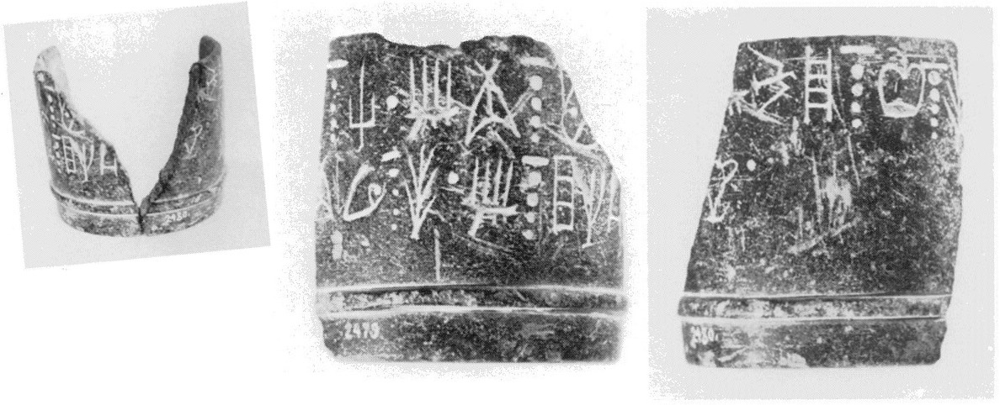
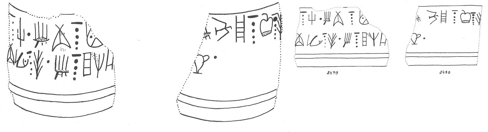

-
APZa2
Names
Aliases for the inscription.
APZa2, AP Za 2
Support
Type of Object.
Stone vessel
Location
Site where object was found.
Apodoulou
Findspot
Location at Site.
Unavailable


Scribe
Writer of Inscription.
Unavailable
Context
Approximate Date of Inscription.
Unavailable
Dimensions
Height x Length x Thickness.
Catalogue
Museum Reference Number.
Readings
1 1 0 NA none
1 1 0 SI none
1 1 1 *900 none
1 1 2 I none
1 1 2 PI none
1 1 2 NA none
1 1 2 MA none
1 1 3 *900 none
1 1 4 I none
1 1 4 KU none
1 1 4 PA₃ none
1 1 4 NA none
1 1 4 TU none
1 1 4 NA none
2 1 4 TE none
2 2 5 PI none
2 2 5 MI none
2 2 5 NA none
2 2 5 TE none
2 2 6 *900 none
2 2 7 I none
2 2 7 NA none
2 2 7 JA none
2 2 7 RE none
2 2 7 TA none
2 2 8 *900 none
2 2 9 QA none
2 2 10 *900 none
Linear A Transcription
A Linear A transcription with words parsed separately.
Line breaks match the inscription.
𐘅𐘤𐄁𐘚𐘢𐘅𐙁𐄁𐘚𐙂𐘰𐘅𐘹𐘅
𐘃𐘢𐘻𐘅𐘃𐄁𐘚𐘅𐘱𐘙𐘳𐄁𐘌𐄁
ASCII Transcription
An ASCII transcription with words parsed separately.
Line breaks match the inscription.
NASI*900IPINAMA*900IKUPA₃NATUNA
TEPIMINATE*900INAJARETA*900QA*900
Linear A Tabulation
A Linear A transcription with words parsed separately.
Line breaks are logical, e.g. to represent a list.
𐘅𐘤𐄁𐘚𐘢𐘅𐙁𐄁𐘚𐙂𐘰𐘅𐘹𐘅𐘃
𐘢𐘻𐘅𐘃𐄁𐘚𐘅𐘱𐘙𐘳𐄁𐘌𐄁
ASCII Tabulation
An ASCII transcription with words parsed separately.
Line breaks are logical, e.g. to represent a list.
NASI*900IPINAMA*900IKUPA₃NATUNATE
PIMINATE*900INAJARETA*900QA*900
AP Za 2
(HM 2479+2480) (
GORILA
IV:
4-5), cylindrical jar, serpentine (Villa [MM III-LM I])
.1: ]NA-SI
•
I-PI-NA-MA
[ • • • • •
• ]
I
-KU-PA
3
-NA-TU-NA-TE
[
.2: ]PI-MI-NA-TE •
I-NA-JA-RE-
TA
[ • • • ]-QA •
.1: GORILA perhaps: ]
I
-KU-PA
3
-NA-TU-NA-TE[. Cf.
KU-PA3-NA-TU (HT 47a.1-2; HT 119.3).
.2: ]PI-MI over [[ ]].
JGY: If KU-PA3-NA-TU-NA-TE is a personal name (vel sim.), then all
these words fit into the Libation Formula; I thus reverse the order of the
two fragments:
: 1. invocation, placename]•
KU-PA
3
-NA-TU-NA-TE[ JA-SA-SA-RA U-NA-RU-KA-]NA-SI •
:
2. I-]PI-MI-NA-TE • I-NA-JA-RE-
TA
[ ]QA
•
: 1. invocation, placename]•
KU-PA
3
-NA-TU-NA-TE[ JA-SA-SA-RA U-NA-RU-KA-]NA-SI •
:
2. I-]PI-MI-NA-TE • I-NA-JA-RE-
TA
[ ]QA
•
Commentary © John Younger
References
papers/GORILA-Vol4.pdf#page=46